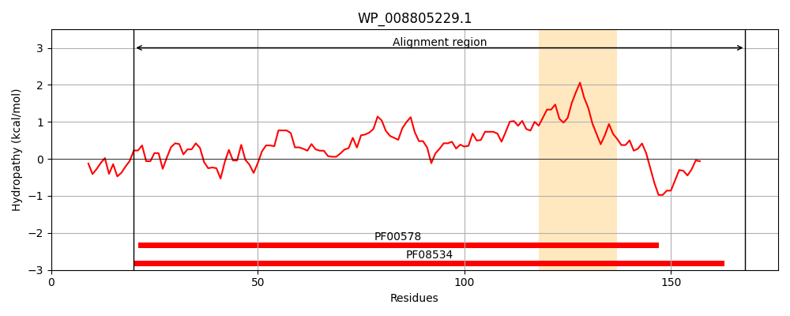
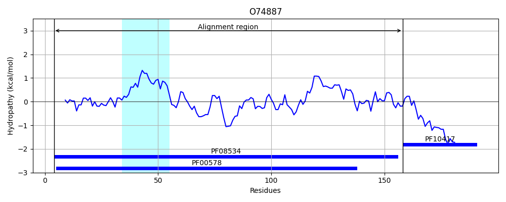
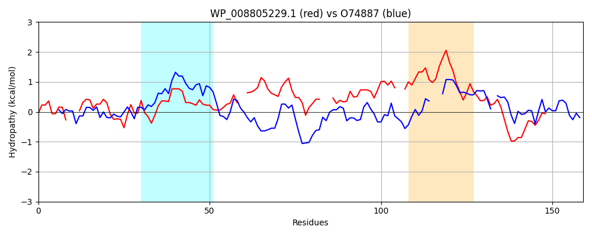

Hit Accession: O74887
Hit TCID: 8.A.147.1.1
Hit Description: gnl|BL_ORD_ID|7520 gnl|TC-DB|O74887|8.A.147.1.1 Peroxiredoxin tpx1 OS=Schizosaccharomyces pombe (strain 972 / ATCC 24843) OX=284812 GN=tpx1 PE=1 SV=1
Mach Len: 159
e:0.000940
Query TMS Count : 1
Hit TMS Count: 1
TMS-Overlap Score: 0.000000
Predicted Substrates:CHEBI:24493;hemin
BLAST Alignment:
Score: 86 , Bit scores: 37 bits, E-value: 9.4e-04, Alignment length: 159, Percentage identity: 27
Query: 20 QAGAKAQPF---TLVAKDLSDVALSQYAGKRKVLNIFPSIDTGVCAASVRKFNQLAAEL--DNTVVLCISADLPFAQSRFCGA---EGLSNVVTLSTLRGASFLA--DYGVAIAAGPLAGLAARAVVVIDENDQVVYSQLVNEITEEPDYDAALAALKA 168
Q G A F +V ++ L+ Y GK L +P T VC + F++ A++ N V+ S D ++ F EG + + L S DYGV I AG+A R + +ID V+ +N++ D AL L A
Sbjct: 4 QIGKPAPDFKGTAVVNGAFEEIKLADYKGKWVFLGFYPLDFTFVCPTEIVAFSEAASKFAERNAQVILTSTDSEYSHLAFINTPRKEGGLGGINIPLLADPSHKVSRDYGVLIED---AGVAFRGLFLIDPKG-VLRQITINDLPVGRSVDEALRLLDA 158 | Protein Hydropathy Plots: |
|---|
|  |  |
Pairwise Alignment-Hydropathy Plot:
|
|---|
|  |